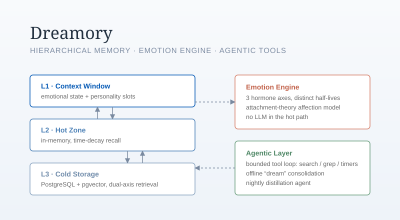

Dreamory: Memory Infrastructure for AI Companions
Infrastructure that lets AI companions actually remember. A three-tier hierarchical memory system (context window, time-decay hot zone, cold storage with dual-axis content/emotion retrieval), a pure-code emotion engine grounded in attachment theory, and a bounded agentic tool loop with offline “dream” consolidation. Verified by 144 offline unit tests; now being re-architected into decoupled, agent-mediated tools.